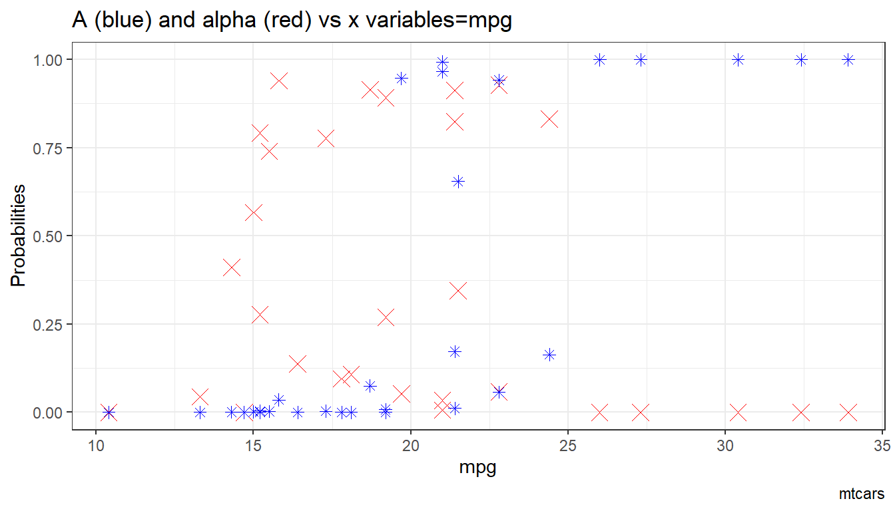
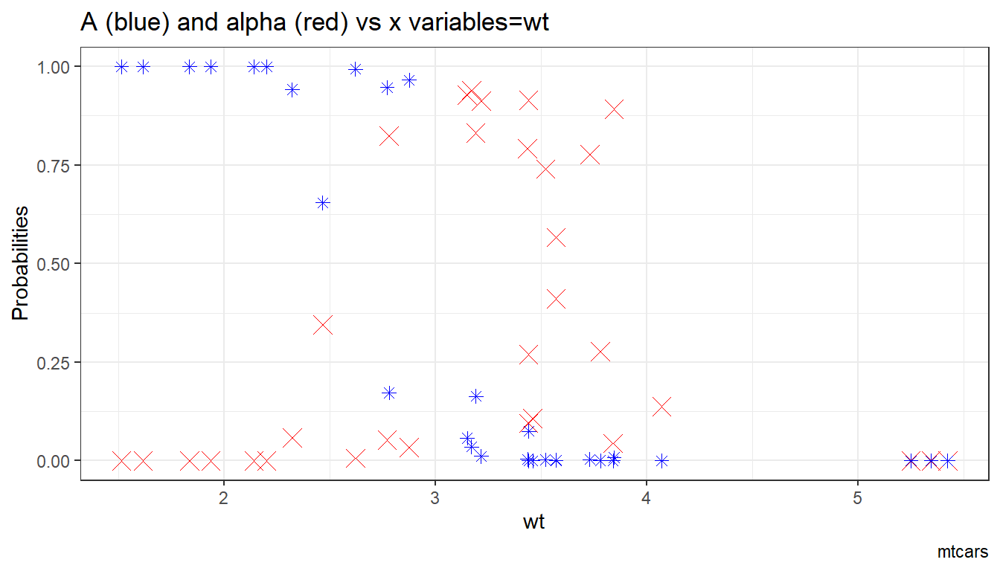
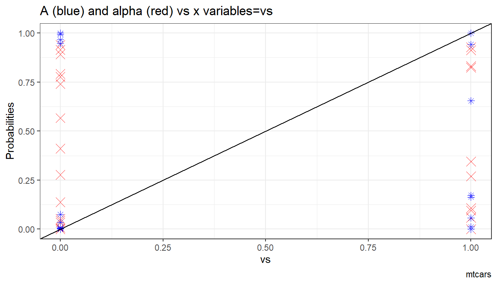

Chapter 6 Nonlinear and Other Regressions
6.1 Logit Regression
6.1.1 Binary Logit
Go back to fan’s REconTools Package, R Code Examples Repository (bookdown site), or Intro Stats with R Repository (bookdown site).
Data Preparation
df_mtcars <- mtcars
# X-variables to use on RHS
ls_st_xs <- c('mpg', 'qsec')
ls_st_xs <- c('mpg')
ls_st_xs <- c('qsec')
ls_st_xs <- c('wt')
ls_st_xs <- c('mpg', 'wt', 'vs')
svr_binary <- 'hpLowHigh'
svr_binary_lb0 <- 'LowHP'
svr_binary_lb1 <- 'HighHP'
svr_outcome <- 'am'
sdt_name <- 'mtcars'
# Discretize hp
df_mtcars <- df_mtcars %>%
mutate(!!sym(svr_binary) := cut(hp,
breaks=c(-Inf, 210, Inf),
labels=c(svr_binary_lb0, svr_binary_lb1)))6.1.1.1 Logit Regresion and Prediction
logit regression with glm, and predict using estimation data. Prediction and estimation with one variable.
# Regress
rs_logit <- glm(as.formula(paste(svr_outcome, "~", paste(ls_st_xs, collapse="+")))
,data = df_mtcars, family = "binomial")
summary(rs_logit)##
## Call:
## glm(formula = as.formula(paste(svr_outcome, "~", paste(ls_st_xs,
## collapse = "+"))), family = "binomial", data = df_mtcars)
##
## Deviance Residuals:
## Min 1Q Median 3Q Max
## -1.73603 -0.25477 -0.04891 0.13402 1.90321
##
## Coefficients:
## Estimate Std. Error z value Pr(>|z|)
## (Intercept) 22.69008 13.95112 1.626 0.1039
## mpg -0.01786 0.33957 -0.053 0.9581
## wt -6.73804 3.01400 -2.236 0.0254 *
## vs -4.44046 2.84247 -1.562 0.1182
## ---
## Signif. codes: 0 '***' 0.001 '**' 0.01 '*' 0.05 '.' 0.1 ' ' 1
##
## (Dispersion parameter for binomial family taken to be 1)
##
## Null deviance: 43.230 on 31 degrees of freedom
## Residual deviance: 13.092 on 28 degrees of freedom
## AIC: 21.092
##
## Number of Fisher Scoring iterations: 7# Predcit Using Regression Data
df_mtcars$p_mpg <- predict(rs_logit, newdata = df_mtcars, type = "response")6.1.1.1.1 Prediction with Observed Binary Input
Logit regression with a continuous variable and a binary variable. Predict outcome with observed continuous variable as well as observed binary input variable.
# Regress
rs_logit_bi <- glm(as.formula(paste(svr_outcome,
"~ factor(", svr_binary,") + ",
paste(ls_st_xs, collapse="+")))
, data = df_mtcars, family = "binomial")
summary(rs_logit_bi)##
## Call:
## glm(formula = as.formula(paste(svr_outcome, "~ factor(", svr_binary,
## ") + ", paste(ls_st_xs, collapse = "+"))), family = "binomial",
## data = df_mtcars)
##
## Deviance Residuals:
## Min 1Q Median 3Q Max
## -1.45771 -0.09563 -0.00875 0.00555 1.87612
##
## Coefficients:
## Estimate Std. Error z value Pr(>|z|)
## (Intercept) 3.8285 18.0390 0.212 0.8319
## factor(hpLowHigh)HighHP 6.9907 5.5176 1.267 0.2052
## mpg 0.8985 0.8906 1.009 0.3131
## wt -6.7291 3.3166 -2.029 0.0425 *
## vs -5.9206 4.1908 -1.413 0.1577
## ---
## Signif. codes: 0 '***' 0.001 '**' 0.01 '*' 0.05 '.' 0.1 ' ' 1
##
## (Dispersion parameter for binomial family taken to be 1)
##
## Null deviance: 43.2297 on 31 degrees of freedom
## Residual deviance: 8.9777 on 27 degrees of freedom
## AIC: 18.978
##
## Number of Fisher Scoring iterations: 9# Predcit Using Regresion Data
df_mtcars$p_mpg_hp <- predict(rs_logit_bi, newdata = df_mtcars, type = "response")
# Predicted Probabilities am on mgp with or without hp binary
scatter <- ggplot(df_mtcars, aes(x=p_mpg_hp, y=p_mpg)) +
geom_point(size=1) +
# geom_smooth(method=lm) + # Trend line
geom_abline(intercept = 0, slope = 1) + # 45 degree line
labs(title = paste0('Predicted Probabilities ', svr_outcome, ' on ', ls_st_xs, ' with or without hp binary'),
x = paste0('prediction with ', ls_st_xs, ' and binary ', svr_binary, ' indicator, 1 is high'),
y = paste0('prediction with only ', ls_st_xs),
caption = 'mtcars; prediction based on observed data') +
theme_bw()
print(scatter)
6.1.1.1.2 Prediction with Binary set to 0 and 1
Now generate two predictions. One set where binary input is equal to 0, and another where the binary inputs are equal to 1. Ignore whether in data binary input is equal to 0 or 1. Use the same regression results as what was just derived.
Note that given the example here, the probability changes a lot when we
# Previous regression results
summary(rs_logit_bi)##
## Call:
## glm(formula = as.formula(paste(svr_outcome, "~ factor(", svr_binary,
## ") + ", paste(ls_st_xs, collapse = "+"))), family = "binomial",
## data = df_mtcars)
##
## Deviance Residuals:
## Min 1Q Median 3Q Max
## -1.45771 -0.09563 -0.00875 0.00555 1.87612
##
## Coefficients:
## Estimate Std. Error z value Pr(>|z|)
## (Intercept) 3.8285 18.0390 0.212 0.8319
## factor(hpLowHigh)HighHP 6.9907 5.5176 1.267 0.2052
## mpg 0.8985 0.8906 1.009 0.3131
## wt -6.7291 3.3166 -2.029 0.0425 *
## vs -5.9206 4.1908 -1.413 0.1577
## ---
## Signif. codes: 0 '***' 0.001 '**' 0.01 '*' 0.05 '.' 0.1 ' ' 1
##
## (Dispersion parameter for binomial family taken to be 1)
##
## Null deviance: 43.2297 on 31 degrees of freedom
## Residual deviance: 8.9777 on 27 degrees of freedom
## AIC: 18.978
##
## Number of Fisher Scoring iterations: 9# Two different dataframes, mutate the binary regressor
df_mtcars_bi0 <- df_mtcars %>% mutate(!!sym(svr_binary) := svr_binary_lb0)
df_mtcars_bi1 <- df_mtcars %>% mutate(!!sym(svr_binary) := svr_binary_lb1)
# Predcit Using Regresion Data
df_mtcars$p_mpg_hp_bi0 <- predict(rs_logit_bi, newdata = df_mtcars_bi0, type = "response")
df_mtcars$p_mpg_hp_bi1 <- predict(rs_logit_bi, newdata = df_mtcars_bi1, type = "response")
# Predicted Probabilities and Binary Input
scatter <- ggplot(df_mtcars, aes(x=p_mpg_hp_bi0)) +
geom_point(aes(y=p_mpg_hp), size=4, shape=4, color="red") +
geom_point(aes(y=p_mpg_hp_bi1), size=2, shape=8) +
# geom_smooth(method=lm) + # Trend line
geom_abline(intercept = 0, slope = 1) + # 45 degree line
labs(title = paste0('Predicted Probabilities and Binary Input',
'\ncross(shape=4)/red is predict actual binary data',
'\nstar(shape=8)/black is predict set binary = 1 for all'),
x = paste0('prediction with ', ls_st_xs, ' and binary ', svr_binary, ' = 0 for all'),
y = paste0('prediction with ', ls_st_xs, ' and binary ', svr_binary, ' = 1'),
caption = paste0(sdt_name)) +
theme_bw()
print(scatter)
6.1.1.1.3 Prediction with Binary set to 0 and 1 Difference
What is the difference in probability between binary = 0 vs binary = 1. How does that relate to the probability of outcome of interest when binary = 0 for all.
In the binary logit case, the relationship will be hump–shaped by construction between \(A_i\) and \(\alpha_i\). In the exponential wage cases, the relationship is convex upwards.
# Generate Gap Variable
df_mtcars <- df_mtcars %>% mutate(alpha_i = p_mpg_hp_bi1 - p_mpg_hp_bi0) %>%
mutate(A_i = p_mpg_hp_bi0)
# Binary Marginal Effects and Prediction without Binary
scatter <- ggplot(df_mtcars, aes(x=A_i)) +
geom_point(aes(y=alpha_i), size=4, shape=4, color="red") +
geom_abline(intercept = 0, slope = 1) + # 45 degree line
labs(title = paste0('Binary Marginal Effects and Prediction without Binary'),
x = 'P(binary=0) for all',
y = 'P(binary=1) - P(binary=0) gap',
caption = paste0(sdt_name)) +
theme_bw()
print(scatter)
6.1.1.1.4 X variables and A and alpha
Given the x-variables included in the logit regression, how do they relate to A_i and alpha_i
# Generate Gap Variable
df_mtcars <- df_mtcars %>% mutate(alpha_i = p_mpg_hp_bi1 - p_mpg_hp_bi0) %>%
mutate(A_i = p_mpg_hp_bi0)
# Binary Marginal Effects and Prediction without Binary
ggplot.A.alpha.x <- function(svr_x, df,
svr_alpha = 'alpha_i', svr_A = "A_i"){
scatter <- ggplot(df, aes(x=!!sym(svr_x))) +
geom_point(aes(y=alpha_i), size=4, shape=4, color="red") +
geom_point(aes(y=A_i), size=2, shape=8, color="blue") +
geom_abline(intercept = 0, slope = 1) + # 45 degree line
labs(title = paste0('A (blue) and alpha (red) vs x variables=', svr_x),
x = svr_x,
y = 'Probabilities',
caption = paste0(sdt_name)) +
theme_bw()
return(scatter)
}
# Plot over multiple
lapply(ls_st_xs,
ggplot.A.alpha.x,
df = df_mtcars)## [[1]]
##
## [[2]]
##
## [[3]]
6.2 Quantile Regression
6.2.1 Quantile Regression Basics
Go back to fan’s REconTools Package, R Code Examples Repository (bookdown site), or Intro Stats with R Repository (bookdown site).
6.2.1.1 Estimate Mean and Conditional Quantile Coefficients using mtcars dataset
Here, we conduct tests for using the quantreg package, using the built-in mtcars dataset.
First, estimate the mean (OLS) regression:
fit_mean <- lm(mpg ~ disp + hp + factor(am) + factor(vs), data = mtcars)
summary(fit_mean)##
## Call:
## lm(formula = mpg ~ disp + hp + factor(am) + factor(vs), data = mtcars)
##
## Residuals:
## Min 1Q Median 3Q Max
## -4.7981 -1.9532 0.0111 1.5665 5.6321
##
## Coefficients:
## Estimate Std. Error t value Pr(>|t|)
## (Intercept) 24.832119 2.890418 8.591 3.32e-09 ***
## disp -0.008304 0.010087 -0.823 0.41757
## hp -0.037623 0.013846 -2.717 0.01135 *
## factor(am)1 4.419257 1.493243 2.960 0.00634 **
## factor(vs)1 2.052472 1.627096 1.261 0.21794
## ---
## Signif. codes: 0 '***' 0.001 '**' 0.01 '*' 0.05 '.' 0.1 ' ' 1
##
## Residual standard error: 2.812 on 27 degrees of freedom
## Multiple R-squared: 0.8104, Adjusted R-squared: 0.7823
## F-statistic: 28.85 on 4 and 27 DF, p-value: 2.13e-09Now estimate conditional quantile regressions (not that this remains linear) at various quantiles, standard error obtained via bootstrap. Note that there is a gradient in the quantile hp coefficients as well as disp. disp sign reverses, also the coefficient on factor am is different by quantiles:
ls_fl_quantiles <- c(0.25, 0.50, 0.75)
fit_quantiles <- rq(mpg ~ disp + hp + factor(am),
tau = ls_fl_quantiles,
data = mtcars)
summary(fit_quantiles, se = "boot")##
## Call: rq(formula = mpg ~ disp + hp + factor(am), tau = ls_fl_quantiles,
## data = mtcars)
##
## tau: [1] 0.25
##
## Coefficients:
## Value Std. Error t value Pr(>|t|)
## (Intercept) 25.34665 1.50911 16.79575 0.00000
## disp -0.02441 0.00952 -2.56333 0.01603
## hp -0.01672 0.01641 -1.01845 0.31718
## factor(am)1 1.39719 1.43085 0.97648 0.33719
##
## Call: rq(formula = mpg ~ disp + hp + factor(am), tau = ls_fl_quantiles,
## data = mtcars)
##
## tau: [1] 0.5
##
## Coefficients:
## Value Std. Error t value Pr(>|t|)
## (Intercept) 27.49722 1.78258 15.42554 0.00000
## disp -0.02253 0.01571 -1.43388 0.16268
## hp -0.02713 0.02329 -1.16494 0.25387
## factor(am)1 3.37328 2.09860 1.60739 0.11919
##
## Call: rq(formula = mpg ~ disp + hp + factor(am), tau = ls_fl_quantiles,
## data = mtcars)
##
## tau: [1] 0.75
##
## Coefficients:
## Value Std. Error t value Pr(>|t|)
## (Intercept) 28.06384 1.75630 15.97892 0.00000
## disp 0.00445 0.01427 0.31201 0.75734
## hp -0.06662 0.01781 -3.74146 0.00084
## factor(am)1 7.91402 2.48452 3.18533 0.003536.2.1.2 Test Conditional Quantile Coefficients if Different
Use the rq.anova function frm the quantile regression packge to conduct WALD test. Remember WALD test says given unrestricted model’s estimates, test where null is that the coefficients satisfy some linear restrictions.
To test, use the returned object from running rq with different numbers of quantiles, and set the option joint to true or false. When joint is true: “equality of slopes should be done as joint tests on all slope parameters,” when joint is false: “separate tests on each of the slope parameters should be reported.” A slope parameter refers to one of the RHS variables.
Note that quantile tests are “parallel line” tests. Meaning that we should except to have different x-intercepts for each quantile, because they represents the levels of the conditional shocks distributions. However, if quantile coefficients for the slopes are all the same, then there are no quantile specific effects, mean effects would be sufficient.
see:
6.2.1.2.1 Test Statistical Difference between 25th and 50th Conditional Quantiles
Given the quantile estimates above, the difference between 0.25 and 0.50 quantiles exists, but are they sufficiently large to be statistically different? What is the p-value? Reviewing the results below, they are not statistically different.
First, joint = TRUE. This is not testing if the coefficien on disp is the same as the coefficient on hp. This is testing jointly if the coefficients for different quantiles of disp, and different quantiles of hp are the same for each RHS variable.
ls_fl_quantiles <- c(0.25, 0.50)
fit_quantiles <- rq(mpg ~ disp + hp + factor(am),
tau = ls_fl_quantiles,
data = mtcars)
anova(fit_quantiles, test = "Wald", joint=TRUE)## Quantile Regression Analysis of Deviance Table
##
## Model: mpg ~ disp + hp + factor(am)
## Joint Test of Equality of Slopes: tau in { 0.25 0.5 }
##
## Df Resid Df F value Pr(>F)
## 1 3 61 0.7986 0.4994Second, joint = False:
anova(fit_quantiles, test = "Wald", joint=FALSE)## Quantile Regression Analysis of Deviance Table
##
## Model: mpg ~ disp + hp + factor(am)
## Tests of Equality of Distinct Slopes: tau in { 0.25 0.5 }
##
## Df Resid Df F value Pr(>F)
## disp 1 63 0.0304 0.8621
## hp 1 63 0.5397 0.4653
## factor(am)1 1 63 1.0957 0.29926.2.1.2.2 Test Statistical Difference between 25th, 50th, and 75th Conditional Quantiles
The 1st quartile and median do not seem to be statistically different, now include the 3rd quartile. As seen earlier, the quartiles jointly show a gradient. Now, we can see that idisp, hp and am are separately have statistically different
First, joint = TRUE:
ls_fl_quantiles <- c(0.25, 0.50, 0.75)
fit_quantiles <- rq(mpg ~ disp + hp + factor(am),
tau = ls_fl_quantiles,
data = mtcars)
anova(fit_quantiles, test = "Wald", joint=TRUE)## Quantile Regression Analysis of Deviance Table
##
## Model: mpg ~ disp + hp + factor(am)
## Joint Test of Equality of Slopes: tau in { 0.25 0.5 0.75 }
##
## Df Resid Df F value Pr(>F)
## 1 6 90 3.957 0.001475 **
## ---
## Signif. codes: 0 '***' 0.001 '**' 0.01 '*' 0.05 '.' 0.1 ' ' 1Second, joint = False:
anova(fit_quantiles, test = "Wald", joint=FALSE)## Quantile Regression Analysis of Deviance Table
##
## Model: mpg ~ disp + hp + factor(am)
## Tests of Equality of Distinct Slopes: tau in { 0.25 0.5 0.75 }
##
## Df Resid Df F value Pr(>F)
## disp 2 94 9.2284 0.0002191 ***
## hp 2 94 6.5798 0.0021162 **
## factor(am)1 2 94 3.6669 0.0292803 *
## ---
## Signif. codes: 0 '***' 0.001 '**' 0.01 '*' 0.05 '.' 0.1 ' ' 1